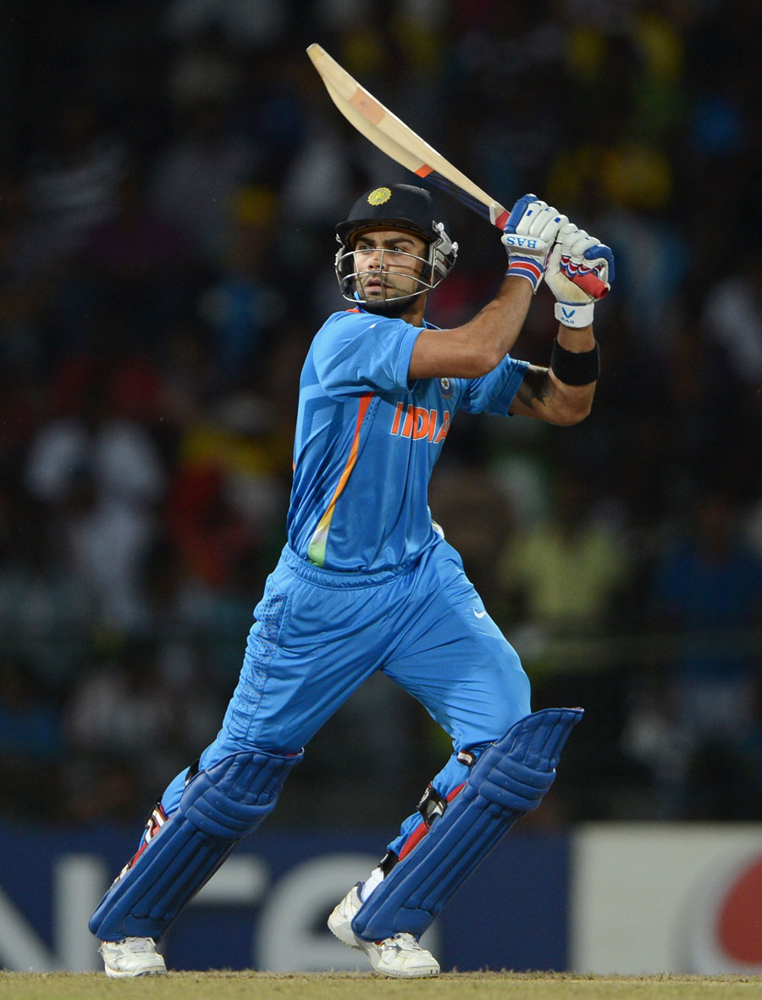
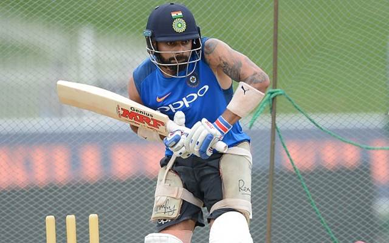
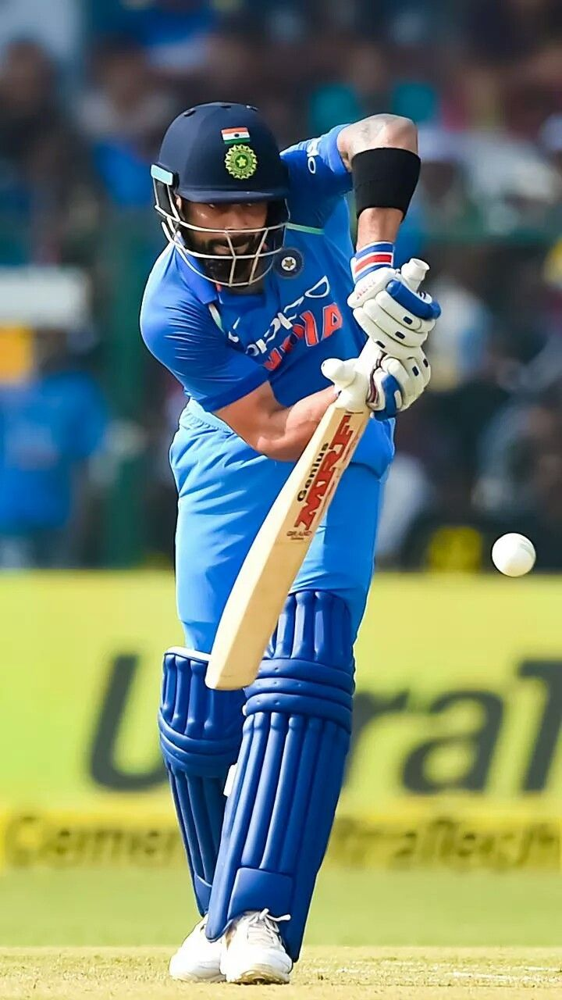
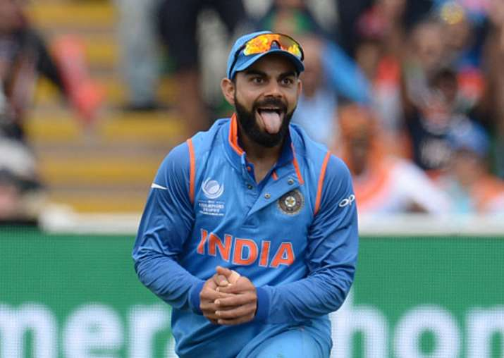
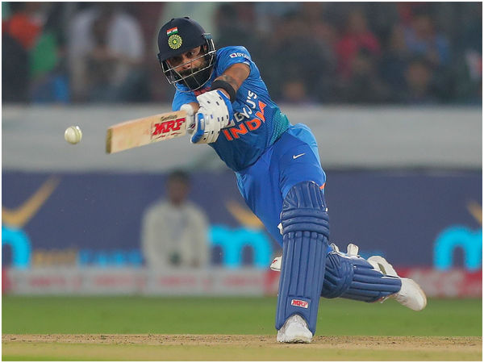
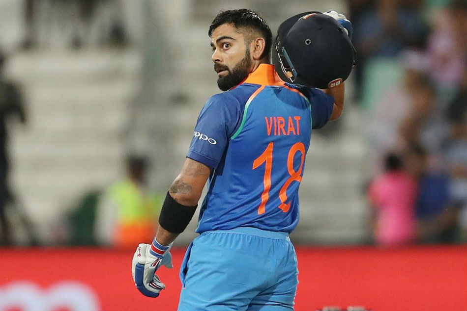
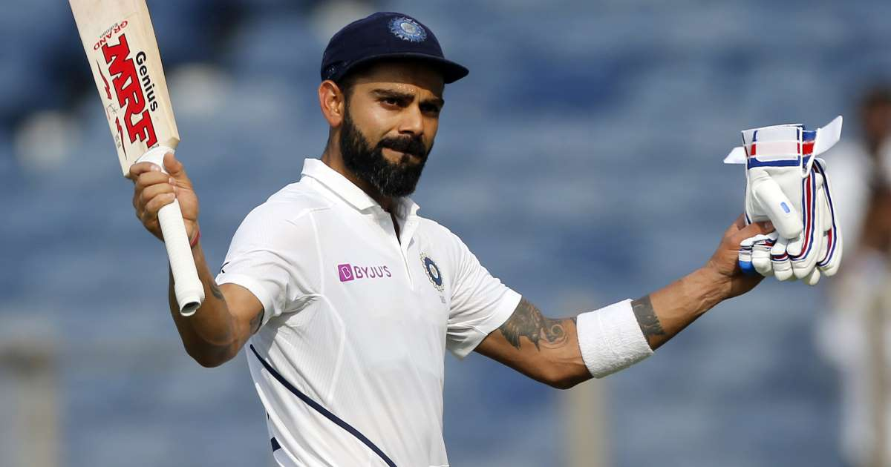
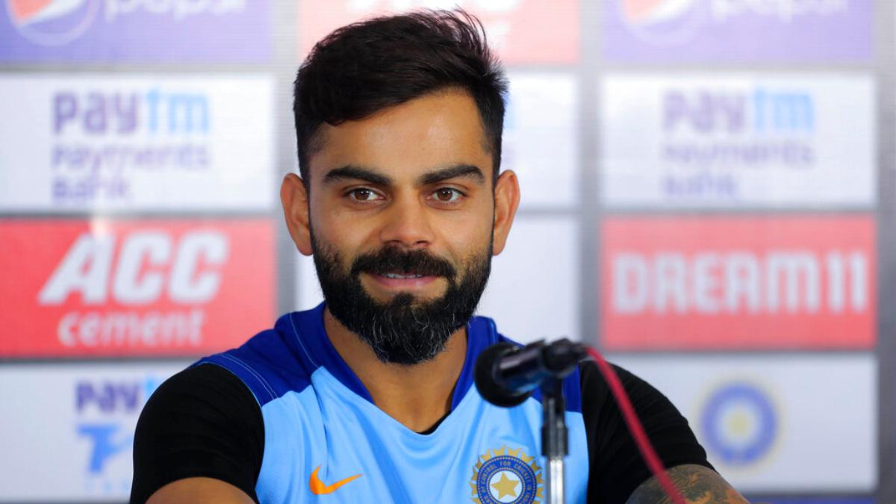

Virat Kohli (born 5 November 1988) is an Indian cricketer. A middle-order batsman, who can also bowl right arm medium pace. Kohli captained the victorious Indian team at the 2008 U/19 Cricket World Cup held in Malaysia, and is the captain of the Royal Challengers Bangalore franchise in the Indian Premier League. He also represents Delhi in first-class cricket and played for the West Delhi Cricket Academy. In One Day International (ODI) cricket, Kohli holds the record for the fastest century by an Indian batsman, and became the fastest to 17 hundreds in ODI by any batsman. He is the fourth batsman in ODIs after Sourav Ganguly (1997-2000), Sachin Tendulkar (1996-98) and Mahendra Singh Dhoni (2007–09) to hit 1000 or more ODI runs in three or more consecutive calendar years. He also holds the record for most centuries in chases, with 11 centuries, behind only Sachin Tendulkar. He is the first batsman to make five successive scores of 50 or more in ODIs on two separate occasions. Kohli was the recipient of the ICC ODI Player of the Year award in 2012. SportsPro has rated him the 2nd most marketable athlete in the world. In October 2013, against Australia, Kohli smashed the fastest ODI century by an Indian, the seventh fastest ever. In November 2013, he became the top ranked ODI batsman for the first time. Kohli, also received the Man of the Tournament during the 2014 T20 World Cup in Bangladesh.
|  |  |  |  |
|  |  |  |  |
Although Dhoni and Virat Kohli still have not retired from cricket, their names deserve to be mentioned on this list of legends. Kohli took over the Test captaincy from Dhoni in 2014 and that of One Day Internationals in 2017 and he has certainly done his predecessor proud. The swashbuckling Kohli is recognised as one of the top batsman of this era having pocketed several world records already.